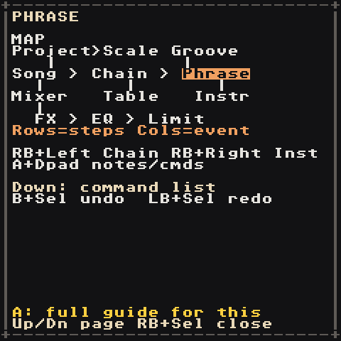

Controls
The RG Nano has few buttons, so the same few combos mean the same thing on every screen. Learn these rules once:
| Keys | Always means |
|---|---|
| D-pad | move the cursor |
| A | add / paste / press the thing under the cursor |
| A + D-pad | change the value (Left/Right small step, Up/Down big step) |
| B + A | delete it, or put a knob back to its default |
| A + Start | hear the instrument (on a phrase, A on a note already previews it) |
| B + D-pad | jump to the neighbouring item that way (chain, phrase, instrument, table, groove; 16 rows on the Song) |
| B | back / close, in dialogs (right away); on a Yes/No question it answers No (so "Save your work?" then B leaves without saving) |
| Left/Right in a list | a page at a time (where Left/Right pick a button instead: LB + Up/Down) |
| RB + D-pad | go to the screen that way on the map |
| Start | play / stop what this screen shows |
| RB + Start | play / stop the whole song (on the Song screen in Live mode: stop this track) |
| LB + Start | capture or launch: record this bar/chain into a sample, or on the Song launch the row live |
| LB + D-pad | the finer or alternate move (chromatic note, instrument page, trim marker, MOD slot, song section or bookmark) |
| B + RB / A + RB | mute / solo the track; RB + LB unmutes all |
| B + LB | start a selection; move to grow it, or hold LB and tap B to grow it to whole rows, then the whole block. In a selection B copies, A + LB cuts, A + D-pad changes every selected value; without one, A + LB pastes |
| Select | this screen's special tool: command picker, Live mode, sample import/root/editor, rename, sort |
| A + Select | mark it: bookmark the Song row |
| B + Select / LB + Select | undo / redo any change, on every screen (hold B or LB first) |
| RB + Select | the helper, on every screen |
Nothing is mapped twice on a screen, and a combo never fires two actions at once.
On the RG Nano, Select is the
FNbutton. LB/RB are the shoulder buttons. The Menu/Power button opens the app menu: Volume and Brightness (Left/Right), Save and quit, Quit, don't save (asks first) and Debug tools. Holding power to switch off saves your song first.
Moving between screens

Hold RB and press a direction:
| From | RB + Right | RB + Left | RB + Up | RB + Down |
|---|---|---|---|---|
| Song | Chain under the cursor | — | Project | Mixer |
| Chain | Phrase under the cursor | Song | — | — |
| Phrase | Instrument of the note | Chain | Groove | Table |
| Instrument | — | Phrase | list of all sounds | Instrument table |
| Table | Instrument table | Table (from the instrument table) | back up | — |
| Groove | — | — | — | Phrase |
| Project | Scale | — | — | Song |
| Scale | — | Project | — | — |
| Mixer | — | — | Song | FX |
| FX | EQ | — | Mixer | — |
| EQ | Limit | FX | — | — |
| Limit | — | EQ | — | — |
If a cell is empty, RB + Right tells you to press A first. Holding RB + a direction moves one screen, however long you hold it.
Everywhere
| Input | Does |
|---|---|
| Start | play / stop (what plays depends on the screen, see below) |
| RB + Start | play / stop the whole song from a Chain, Phrase, Table, Groove or Instrument screen |
| RB + Select | helper: Down/Up flips map → commands → how-to, A opens the full guide, RB + Select closes |
| B + Select / LB + Select | undo / redo (32 steps; one A-hold of edits is one step) |
| A + RB | solo the track (Song, Chain, Phrase, Mixer) |
| B + RB | mute the track (Song, Chain, Phrase, Mixer) |
| B + LB | start a selection; B copies it, A + LB pastes |
The small label at the top right says what is playing: PLAY:SONG, PLAY:CHAIN, PLAY:PHR, PLAY:LIVE, AUDITION or STOP.
Song
| Input | Does |
|---|---|
| D-pad | move between rows (time) and the 8 tracks |
A on -- |
put the last-used chain here (screen says Reused 00) |
| A again | replace it with a brand-new empty chain (New chain 01) |
| A + D-pad | change the chain number |
| B + A | delete the chain from this cell |
| B + Up/Down | 16 rows up / down |
| LB + Up/Down | jump to the next / previous bookmark or section start |
| A + Select | bookmark this row (again: remove the bookmark) |
Up on row 00 |
move tracks: A + Left/Right carries the track over, Down is done |
| LB + Left/Right | nudge the tempo |
| Start | play the song from this row |
| B + Start | while playing, jump every track to this row right away |
| Select | switch to Live mode and back (see below) |
Live mode
Jam with your song: loop sections, bring parts in and out, switch sections on the beat. Select on the Song screen switches Song ↔ Live; the title says which, and the buttons are listed at the bottom of the screen.
| Input (Live) | Does |
|---|---|
| Start on a cell | cue that chain on its track: it starts when the track's current chain ends, then loops. Press twice to switch at the next bar instead |
| LB + Start | cue the whole row: every track switches to this section together |
| RB + Start | cue a stop for this track (twice: stop at the next bar) |
| B + Start | stop everything now |
| B + RB / A + RB | mute / solo a track while it plays |
A cued cell blinks in green until it starts. A track keeps looping its chain until you cue something else, so you can leave the drums on the verse while the bass moves to the chorus. LB + Start also switches to Live by itself. The Mixer, and Start on any other screen, work as usual.
Chain
| Input | Does |
|---|---|
A on -- |
put the last phrase here; A again for a new empty phrase |
| A + D-pad | change phrase number, or transpose (second column) |
| B + D-pad | jump to the next/previous chain |
| Start | play this track's chain on a loop |
| LB + Start | record the chain into a new sample (render to sample) |
Phrase
| Input | Does |
|---|---|
| A on an empty step | add a note (copies the last note and instrument) |
| A + Left/Right | note down/up a semitone (or a scale step if a key is set) |
| A + Up/Down | note down/up an octave |
| LB + D-pad on a note | chromatic edit that ignores the key/scale |
A + D-pad on the I column |
pick the instrument |
| Select on a command column | open the command picker |
| A + Up/Down on a command | step through the commands A to Z |
| A + Left/Right on a command | step through the commands in list order |
| B + A | delete |
| B + D-pad | jump to the neighbouring phrase |
| Start | loop this bar |
| LB + Start | record this bar into a new sample (render to sample) |
With a selection (B + LB, then move to grow it), LB + D-pad writes for you:
| Input | Does |
|---|---|
| LB + Right | random notes in the song's Key/Scale, keeping the rhythm (no notes selected: random notes on random steps). Again for another roll |
| LB + Left | fill: repeat the first selected note on every step; again for every 2nd, 4th, 8th step |
| LB + Up | shuffle the selected steps |
| LB + Down | reverse them |
Didn't like it? B + Select undoes.
Instrument
| Input | Does |
|---|---|
| LB + Left/Right | change page (SOUND, ENV, FILTER, LFO, MOD, MIX, EQ for synths) |
| LB + Up/Down on the MOD page | pick the slot (1–4) the settings edit |
A + Left/Right on preset |
browse ready-made sounds (of the synth's engine) |
| A + D-pad | change the focused knob |
| Up/Down in a grid (FM4 operators, hyper notes) | stay in the column; Left/Right move across (see Engines) |
| B + Left/Right | previous / next instrument (B + Down/Up: 16 forward / back) |
| B + A | put the knob back to its default (on sample: remove the sample; on table: clear it) |
| RB + Up | the list of all sounds |
| Start | play / stop the phrase, same as the Phrase screen |
| A + Start | hear the instrument (synth at C3, sample at its root); again to stop |
| RB + A + Left/Right | hear it an octave down / up |
Sample instruments have their own pages, play modes, trim controls and a sample editor (Select on the Source or Loop page) — see Samples.
Moving tracks
Up on the Song's row 00 switches to track moving (the title says MOVE TRACKS):
| Input (moving tracks) | Does |
|---|---|
| Left/Right | pick a track |
| A + Left/Right | move the track one place, with its chains, mixer level and mute |
| Down or B | back to the song grid |
Scale
| Input | Does |
|---|---|
| Up/Down | Key → Scale → keyboard |
| A + D-pad on Key/Scale | change it (Up/Down: 10 scales at a time) |
| Left/Right on the keyboard | pick a note |
| A on a note | in or out of the scale (makes it your Custom scale) |
| B + A | on a note: take it out; on Key/Scale: back to none / chromatic |
| Start | play / stop the song |
| RB + Left | back to Project |
Mixer, FX, EQ and Limit
| Input | Does |
|---|---|
| Left/Right | pick a strip (Mixer) |
| Up/Down | pick a knob (FX, EQ, Limit) |
| A + Up/Down / A + Left/Right | big / small step |
| B + A | back to default (fader to C0, master to 100, knob to its default) |
| B + RB / A + RB | mute / solo the track (Mixer); RB + LB unmutes all |
| Start | play / stop the song |
Naming a new song
The letters are in alphabetical order (not QWERTY), so the next letter is always one press away.
| Input | Does |
|---|---|
| D-pad | move over the keys and the abc RANDOM CANCEL DONE row (Down from the buttons wraps to the top letters) |
A on abc / ABC, or Select |
switch the keys to lowercase / uppercase |
| A | type the letter / run the button |
| B | erase a letter; on an empty name, leave without making a song |
| LB / RB | move the cursor inside the name |
Start or DONE |
create the song |
The suggested random name is highlighted: the first letter you type replaces it. name taken means a song with that name already exists.